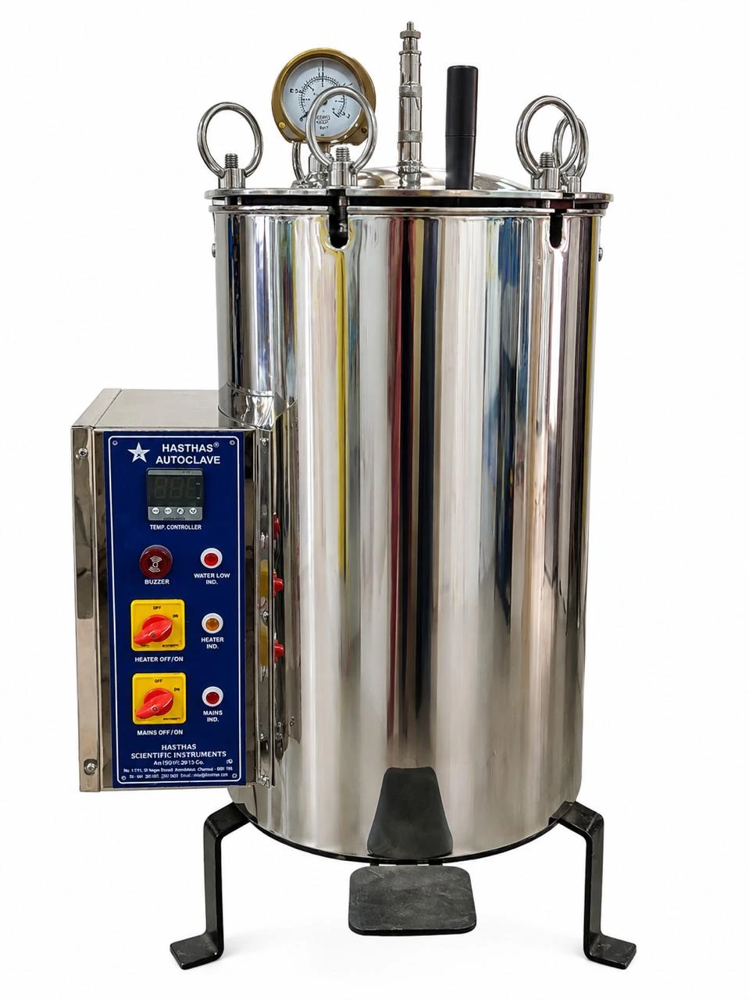
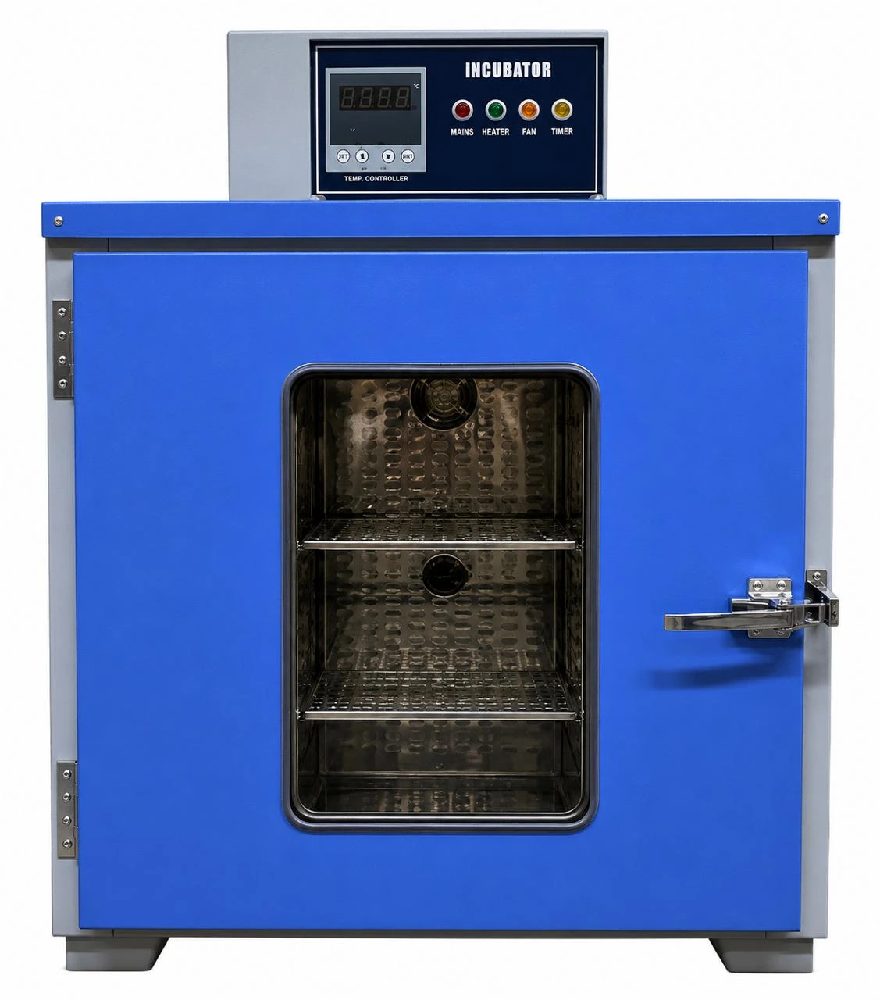
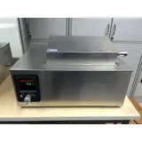
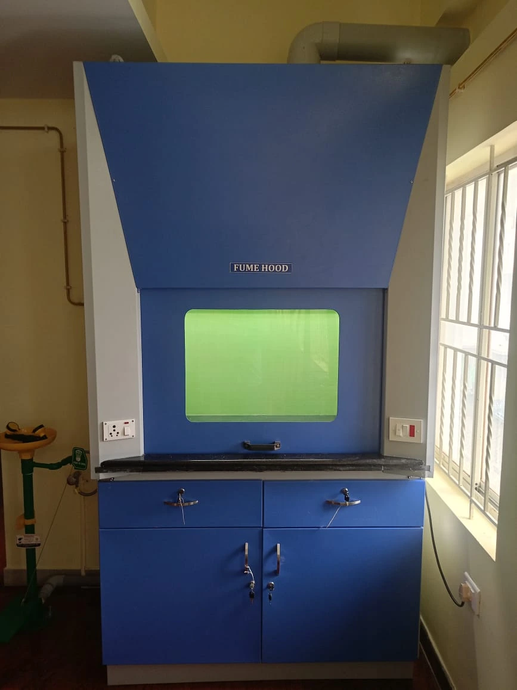
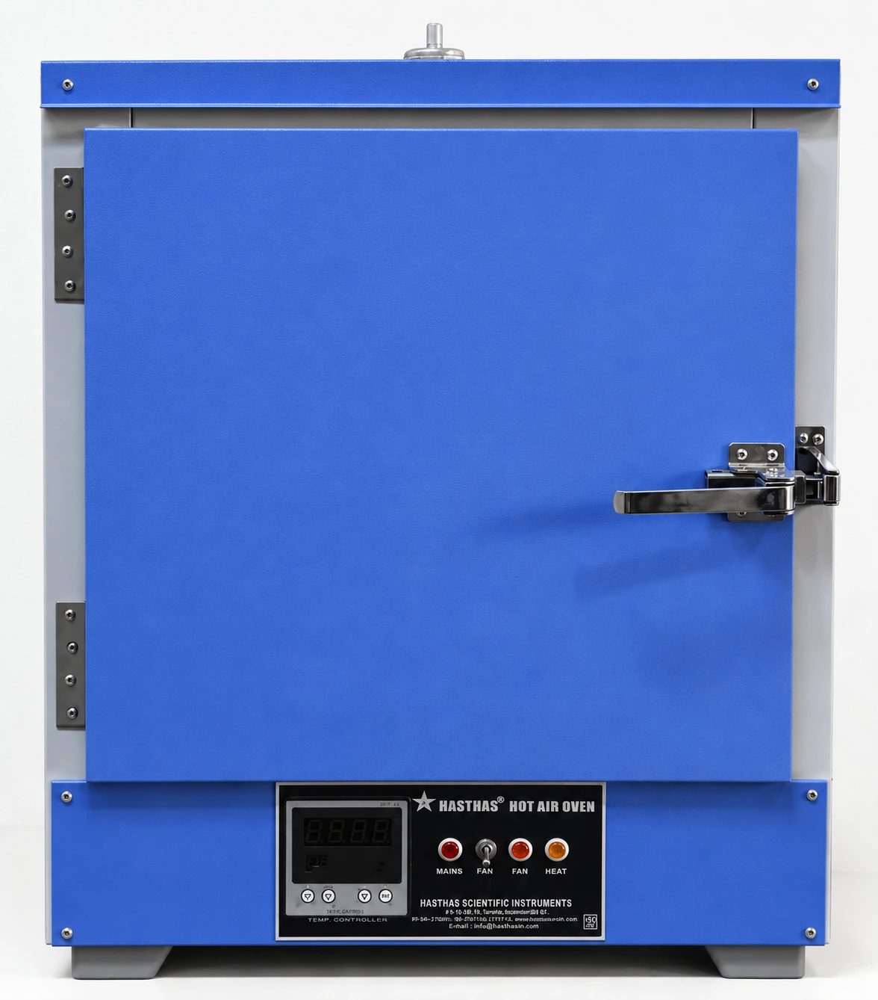
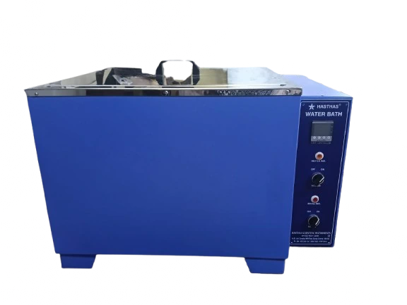
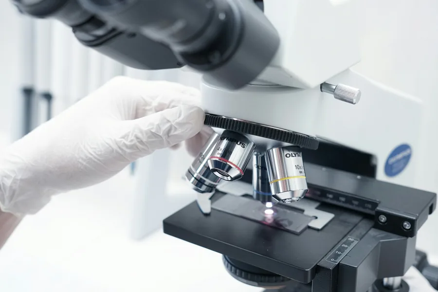
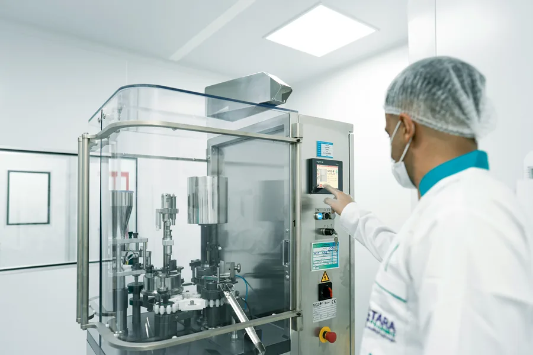
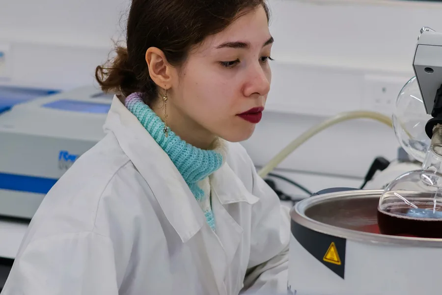

Sterilization
HSI-101
Vertical Autoclave - With Controller
Vertical high-pressure steam sterilizer shown with controller and automatic pressure-control configuration.
View product detailsHasthas manufactures and supplies autoclaves, incubators, hot air ovens, muffle furnaces, laminar flow units, fume hoods, water baths and scientific instruments for colleges, hospitals, research laboratories and industries.
Hasthas holds quality, compliance and enterprise registration documents supporting its laboratory equipment manufacturing activities.
View All Certificates ISO 9001
ISO 9001
 CE Compliance
CE Compliance
 MSME ZED
MSME ZED
 Udyam
Udyam

SterilizationAutoclaves and sterilizers
Incubation & ChambersIncubators and controlled chambers
Temperature BathsWater and controlled-temperature baths
Lab EssentialsClean-air, heating, stirring and process equipmentFind equipment for sterilization, incubation, controlled heating, clean-air work, temperature baths and routine laboratory processes.

Autoclaves and sterilizers
View products
Incubators and controlled chambers
View products
Hot air, vacuum and drying ovens
View products
Muffle, tubular and high-temperature furnaces
View products
Water and controlled-temperature baths
View products
Clean-air systems, hot plates, stirrers and process equipment
View productsVertical high-pressure steam sterilizer shown with controller and automatic pressure-control configuration.
View product details
Low-temperature incubator for BOD determination and preservation applications.
View product details
Incubator-shaker combination for controlled temperature and platform movement.
View product details
High-temperature furnace for laboratories and industrial testing requirements.
View product details
Industrial tray drier for bulk material, production and institutional drying applications.
View product details
Vertical clean-air work cabinet for protected laboratory operations.
View product details
Heavy-duty circular laboratory hot plate with adjustable low, medium and high heat control.
View product details
Electrically operated stainless-steel Bunsen burner for heating crucibles and laboratory samples.
View product detailsWhen you select laboratory equipment from Hasthas, you receive more than a product—you get practical guidance, dependable manufacturing and direct support for your application.

Quality controlEvery unit is inspected before supply for dependable laboratory use.
Autoclaves, incubators, ovens, furnaces, clean-air systems and more.

Manufacturer directDiscuss specifications and quotations directly with the Hasthas team.

Flexible solutionsSelected models can be matched to the capacity and controls you require.
Receive support through call, email or WhatsApp after your enquiry.
Read recent feedback from customers who purchased or enquired about laboratory and scientific instruments from Hasthas.
Practical guidance for comparing equipment capacity, operating range, safety features, controls and application requirements before requesting a quotation.

Compare capacity, pressure controls, safety features and day-to-day operating needs.
Read guide


Learn what a laboratory hot air oven is, how dry-heat circulation works, its common uses and the key specifications to check before purchase.
Read guide
Understand what a laboratory incubator is, how it maintains controlled conditions, common incubator types and the specifications required for selection.
Read guide
Learn what a laboratory furnace is, how its insulated high-temperature chamber works, common applications and the factors used to select a furnace.
Read guide
Learn what a laboratory autoclave is, how saturated steam sterilization works, common autoclave uses, types and selection requirements.
Read guideAnswers to common questions about equipment selection, custom configurations, quotations and contacting Hasthas in Chennai.
Share the equipment name, application, required chamber size or capacity, temperature range, quantity and installation location.
Selected products are available in multiple sizes and configurations. Contact the team with the required dimensions and operating conditions.
No. Product pricing depends on the model, capacity, controls, accessories and quantity. Use the quotation form for current commercial details.
Yes. The website is designed for direct product enquiries from educational, healthcare, research and industrial organisations.
Hasthas Scientific Instruments is located at 12, Margosa Street, Ramapuram, Alandur, Guindy, Chennai – 600016, Tamil Nadu. Customers can call, email or send a WhatsApp enquiry for product specifications and quotations.
Share the product, capacity and quantity. Our team will help with suitable options.